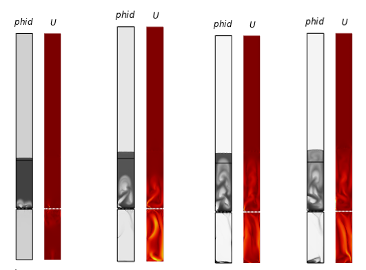
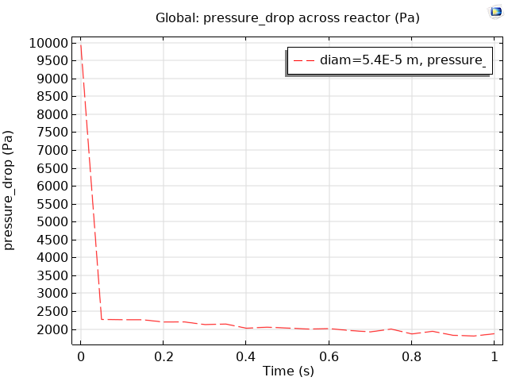
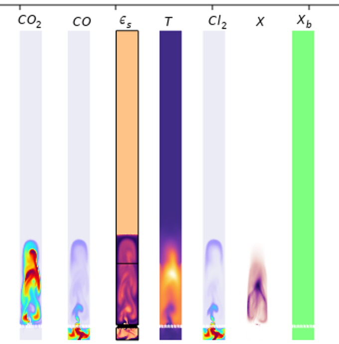

The problem
Duranium’s process includes a fluidized‑bed reactor where magnesium oxide particles react with chlorine and carbon monoxide:
MgO(s) + Cl₂(g) + CO(g) → MgCl₂(l) + CO₂(g)
The team needed a computational model that could predict conversion and bed behavior, so fewer physical experiments would be needed as the process scales. The catch: COMSOL has no built‑in way to combine fluidized‑bed hydrodynamics with shrinking‑core particle kinetics, and the reaction involves solid, liquid, and gas at once.
Phase 1: the cold model
I started with a non‑reacting model to make sure the hydrodynamics were right before adding chemistry. Using COMSOL’s Euler‑Euler interface in 2D, I simulated the bed fluidizing and cross‑checked every key result against hand calculations.

- Calculated minimum fluidization velocity with the Ergun equation (0.115 m/s) and cross‑checked it with the Wen & Yu correlation in a spreadsheet tool I built.
- Simulated pressure drop settled near 2,000 Pa, close to the theoretical bed‑weight value of about 2,230 Pa.
- Ran a particle‑size study at 54, 200, and 500 µm, tracked bed expansion and particle loss through the distributor, and confirmed solid mass was conserved throughout.

Phase 2: the hot model
With the hydrodynamics validated, I built the reacting model from first principles. I derived the reaction rate and mass source terms by hand, following the fluidized‑bed design method in Kunii and Levenspiel, and reformulated the conversion balance for a batch, spatially resolved bed. Then I implemented it as a coupled system: Euler‑Euler flow, Transport of Concentrated Species, Heat Transfer in Fluids, and Domain ODEs for particle conversion.

Kinetics were calibrated against published data (activation energy of 49 kJ/mol), and the model predicts about 40% solids conversion, giving the team a baseline for comparing operating conditions. I also restructured the solver to fix convergence problems, and documented where the model should go next, including a full three‑phase treatment once experimental data are available.
On the plant floor
- Integrated 13 pressure, 8 temperature, and 19 flow instruments across three pilot process units, working with controls engineers.
- Installed and calibrated two chlorine analyzers on a gas scrubber.
- Led functional testing of six process lines and equipment assemblies, finding and fixing piping, instrumentation, and equipment issues before startup.
- Leak‑tested piping systems and supported fluidized‑bed experiments with the research engineers.
What I learned
A model is only useful if the people running the plant trust it. Spending half my time with the hardware made me a better modeler: I knew which numbers the team would actually check, and I built the model to be re‑parameterized quickly when their data arrived.